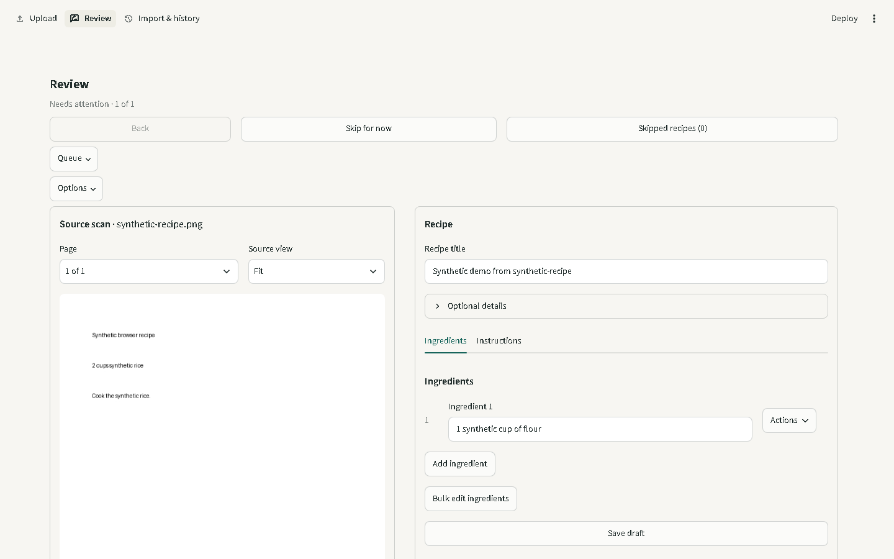
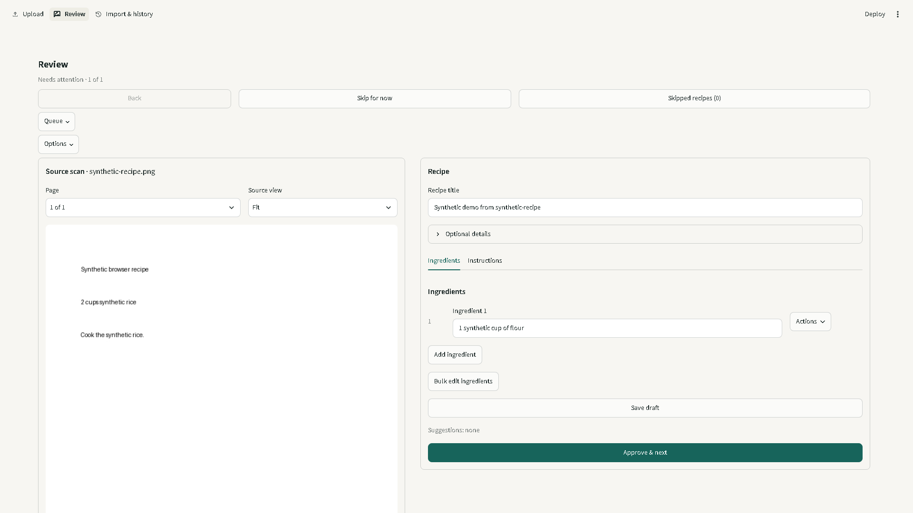
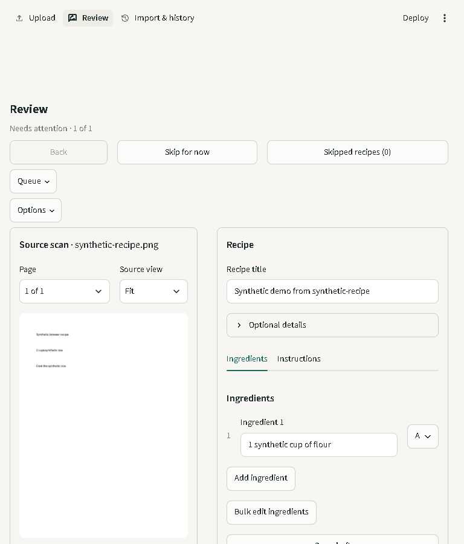
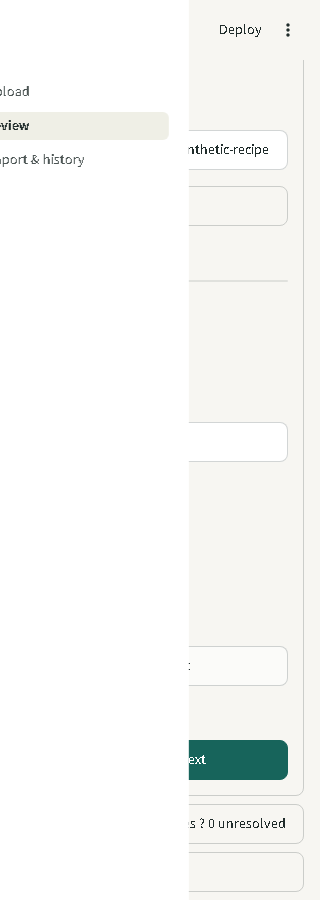

252. Queue/navigation stack consumes first-view height.
5. Save fits; Approve is below the first viewport.

22. Same stack is less costly when the viewport is taller; both actions fit.

33. Source/editor panes are both narrow while remaining side by side.

44. The named menu exposes Review by keyboard. The open menu squeezes and clips the source/editor; switching destinations and collapsing the menu is required to work at this width.